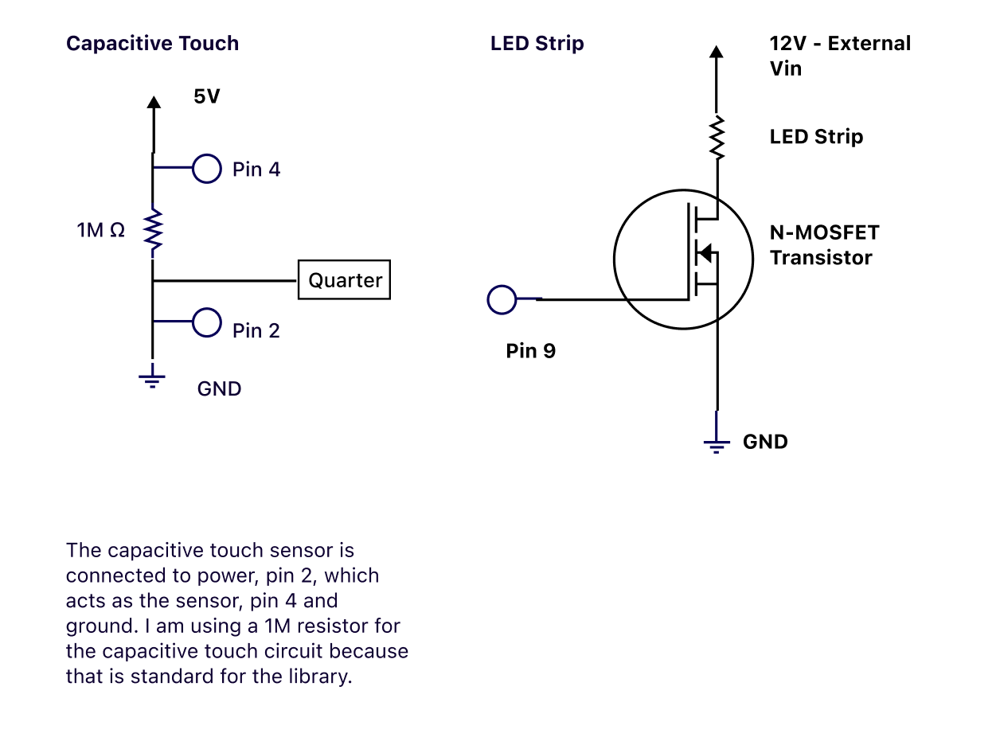
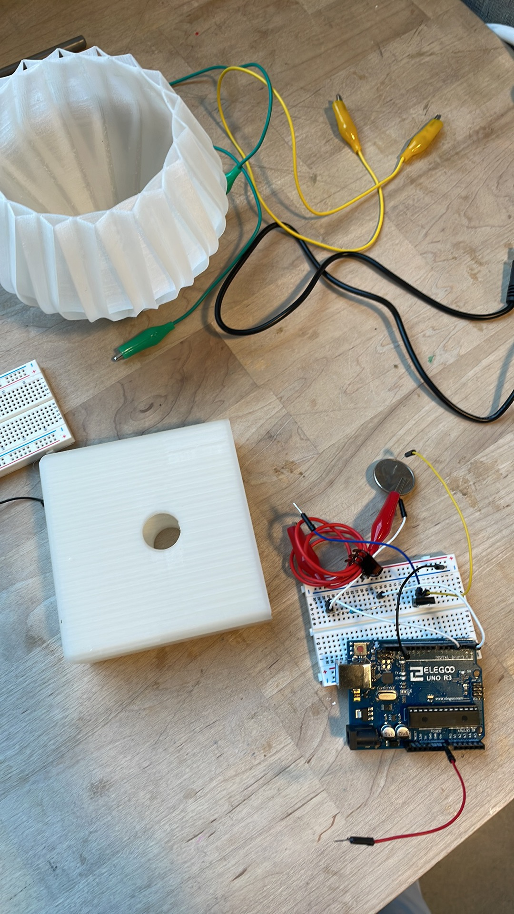

Bedside table lamp
Product Concept
For this assignment, I am designing and building a bedside table lamp. This lamp will have a touch sensor to turn the light on and off. The light will come from an LED strip. The lamp itself will be laser cut and 3D-printed. The base of the lamp will be laser cut, and the lamp shade will be 3D-printed.
Design Process
I started with building the circuit board and writing the code for the firmware. The code would take capacitive touch input data and turn the light on and off accordingly. Then, I put the circuit into a lowfidelity cardboard prototype of my lamp.
The Schematic

Here is the schematic and calculations for my circuit.

This is a quick demo of how my low fidelity prototype was working. At this point, I needed to work on the high fidelity designs, as well as touch callibration.
Moving into higher fidelity
I started 3D printing my lamp shade. For the sake of time, I decided to print a model from Cults3D. I printed this lamp shade model.
While my lamp shade printed, I started working on the lamp base. I initially intended to print a base, but the print failed. I pivoted to laser cutting a base.
For sleekness I wanted to design a rounded base, which means I would need to laser cut a kerfing pattern.
This proved harder than I thought, especially with little experience with kerfing, but nonetheless, I gave it a shot!
3 of the 4 rounded edged cracked once I started bending the plywood. I taped the corners together just to have a base to store my breadboard.
Once my lamp shade finished printing, I put the prototype together.

Looking at this prototype, I decided the laser cut plywood base was too bulky and did not fit with the light transparent lamp shape, so I went back to 3D print the base.
First, I mockuped a low fidelity cardboard prototype.
Satisfied with this design, I bought some 400 point breadboards, and started modeling my lamp base in OnShape.
Piecing the design together
With all my parts designed and printed, my lamp was ready for assembly and further callibration.

Firmware
// Carol Lei
// Touch sensor lamp
// Grab the quarter to turn on the lamp
#include // include Capacitive Sensor library
CapacitiveSensor cs_4_2 = CapacitiveSensor(4,2); // 1 megohm resistor between pins 4 & 2, pin 2 is sensor pin, add wire
int sensorValue = 0; // the sensor value
int sensorMin = 2000; // minimum sensor value, set to higher than expected
int sensorMax = 0; // maximum sensor value, set to lower than expected
int led = 9; // the PWM pin the LED is attached to
bool touch = false; // touch boolean to turn the LED on/off
void setup() {
Serial.begin(9600); // initiate serial to 9600 baud
while (millis() < 5000) { // run for 5 seconds
sensorValue = cs_4_2.capacitiveSensor(30); // gather sensor value from touch
if(sensorValue > sensorMax) { // if sensor value is greater than current max
sensorMax = sensorValue; // record the maximum sensor value
}
if(sensorValue < sensorMin){ // if sensor value is less than current min
sensorMin = sensorValue; // record the minimum sensor value
}
}
pinMode(led, OUTPUT); // set LED to output
}
void loop() {
sensorValue = cs_4_2.capacitiveSensor(30); // get sensor value
// Serial.print("Sensor value is ");
// Serial.println(sensorValue);
sensorValue = map(sensorValue, sensorMin, sensorMax, 0, 180); // map sensed value to 0, 180
// Serial.println(sensorValue);
if(sensorValue >= 50){ // if the mapped value is greater than 50
touch = !touch; // change the boolean value of touch
}
if(touch){ // if touch is true
analogWrite(led, 255); // turn the LED strip on to full brightness
delay(1000); // wait 1 second
} else {
analogWrite(led, 0); // turn the LED strip off
delay(1000); // wait half a second
}
}
This is the code I used to develop the behavior I wanted. See the comments in the code for further explanations.

The callibration was improving with the new firmware. A big key was callibrating with the touch sensor already in place, clipped to the lamp base.
My breadboard


Here is my breadboard with a capacitive touch sensor and LED strip lights.
Bedside Table Lamp!

Use the touch sensor to turn the lamp on and off.